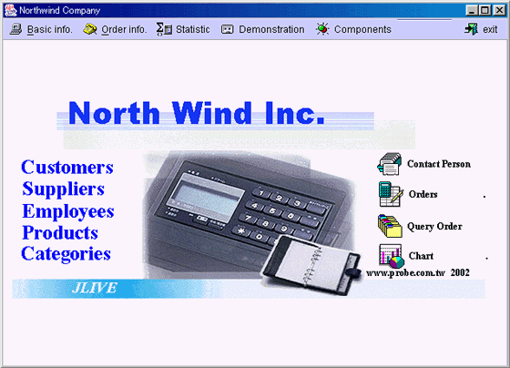
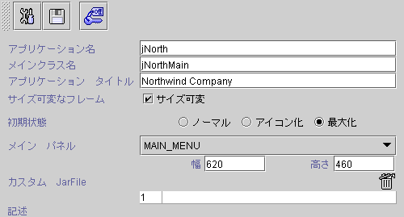
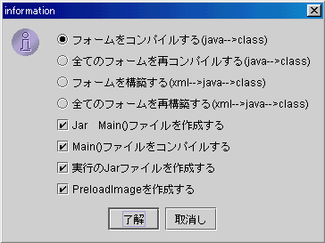

|

8.2 スタンドアロンアプリケーション (stand alone program -- jar run)
jLIVE Builder™ システムは全てのフォームとレポートclass
を独自で実行できる(standalone) Java™ jar
fileの形に圧縮します
。システムは自動的にメインフォームの枠を作成でき，メインフォームがデザインナーに指定されます。ユーザは普通の Windows
のようにアプリケーションを実行できます。

Jar
ファイルに必要な class ファイルが既に含まれている為，Jar run
はユーザ側で独自にアプリを順調に実行できます，サーバーから class
ファイルを転送することがありません。ただし，Applet
形式と異なって随時に class の更新ができません。


-
コンパイル
(Java --> class) ：
更新されたJava™ source file ( *.java
日付 *.class ファイル)のみをコンパイル(compile)されます。
-
全てフォームのリコンパイル
(Java --> class) ：全てのJava™ source fileを再度コンパイル
(compile) します。
-
フォームビルド
(XML --> Java --> class) ：フォームの
XML からJava™ source file (*.java)へ転換し ， 再びそれを
Java class (*.class)にコンパイルします。ビルドされるのは更新されたXML
に限ります ( *.xml *.java )。
-
全てフォームの再度ビルド
(XML --> Java --> class)：フォームの
XML から Java™ source file (*.java)
に転換し，再びそれを Java™ class (*.class)にコンパイルします。
-
Jar Main()
ファイル作成 (generate main() file)：
Java™ 実行するメインファイル main java source fileを作成します。
-
Main()
ファイルのコンパイル(compile main() file)：Java™
実行するメイン main java source file をコンパイルします。
-
実行する
Jar ファイルのビルド (build executable jar file)：
全てのフォームとレポート class
を一つの独自に実行できる (standalone) Java™ jar
file の形に圧縮します。
-
統合プリーロードイメージ
(generate pre-load images)：
class/preloadimage
フォルダ下のイメージを jimage.jar
の形に圧縮し ，
class
フォルダの下に置きます。
-
保存
(save modified jar run settings)  ( 修正保存設定 )
( 修正保存設定 )
-
セキュリティ
(security control)
 ( セキュリティコントロール ) jLIVE Builder™
システムデフォルトデフォルト登録機能
( セキュリティコントロール ) jLIVE Builder™
システムデフォルトデフォルト登録機能
-
アプリ名 (app name)：独自に実行できる Java Jar file
名
-
MainClass 名稱
(mainclass name)：jLIVE
Builder™
は自動に作成した Java main()
の class 名
-
アプリのタイトル
(application title)：メインフォームのタイトル
-
サイズ可変フレーム
(resizable frame)：メインフォームはユーザによって調整できるかどうか
-
初期ステート (initial
state)：メインフォーム初期の大きさ
-
ノーマル (normal)：メインフォームのオリジナル大きさ
-
アイコン
(iconified)：アイコン Iconの形
-
最大化 (maximize)：全部スクリーンの大きさ
-
メインフォーム (main
panel)：アプリ最初のフォーム画面
-
特製 Jar 檔 (custom
jar file )：jLIVE
Builder™
は外部 class
へのコールが可能で，或いはここに特製の参照 class を第３者モジュール
(third
party class)として入力します。
-
説明 (description)：デザインナーはアプリに関する説明
▲Top
Copyright © 2001~
2004 Probe Technology . All Rights Reserved.
Questions, comments,
and suggestions to Service@probe.com.tw
|